01｜文章 CRUD：EF Core 入門
不寫一行 SQL，用 C# 對資料庫做新增、查詢、修改、刪除，再回頭看 EF Core 幫你產生了什麼 SQL
🧰 本課使用版本（2026-10 驗證過）
- .NET SDK 10.0（專案
TargetFramework是net10.0） - EF Core 10.0.13（
Microsoft.EntityFrameworkCore.SqlServer、.Design） dotnet-ef工具 10.0.13（版本要跟 EF Core 一致）- SQL Server 2022（第 0 課的 Docker 容器）
套件版本會一直更新。如果你看到的版本號比較新，只要主版本相同（都是 10.x），寫法就一樣。
1. 這一課要解決的問題
第 0 課已經有一個空的 BlogDb。部落格最基本的功能是文章的 CRUD：
| 功能 | CRUD | HTTP | 網址 |
|---|---|---|---|
| 新增文章 | Create | POST | /api/posts |
| 文章列表、關鍵字搜尋 | Read | GET | /api/posts?keyword=xxx |
| 單篇文章 | Read | GET | /api/posts/{id} |
| 修改文章 | Update | PUT | /api/posts/{id} |
| 刪除文章 | Delete | DELETE | /api/posts/{id} |
這張圖的重點是對應關係：HTTP 方法和 SQL 指令幾乎一對一。
| CRUD | HTTP 方法 | SQL 指令 | 部落格裡的例子 | |
|---|---|---|---|---|
| Create 新增 | POST | → | INSERT | 發表一篇文章 |
| Read 讀取 | GET | → | SELECT | 看列表、看單篇 |
| Update 修改 | PUT | → | UPDATE | 修改文章 |
| Delete 刪除 | DELETE | → | DELETE | 刪除文章 |
為什麼說「幾乎」？因為不是每次都剛好一句對一句：
- 修改有兩種 HTTP 方法：
PUT是整筆換掉，PATCH是只改部分欄位，兩個最後都是UPDATE（本課只用PUT） - 一個動作可能不只一句 SQL：例如
PUT要先SELECT找出文章、確認存在，才UPDATE；找不到就直接回 404，UPDATE根本不會執行 - 這是 REST 的習慣，不是硬性規定：像「登入」通常用
POST，但它是查資料（SELECT），不是新增
中間的 Controller 方法和 EF Core，就是這一課要寫的部分。SQL 送到 SQL Server 執行後，Controller 拿到結果，才決定要回 201、200、204 還是 404。
最右邊那一欄 SQL 要怎麼產生？下一節先看看「沒有 EF Core 的話要怎麼做」。
2. 原理：EF Core 怎麼幫你跟資料庫溝通
這一節依序回答七個問題，看完就知道第 3 節每一行程式碼「為什麼要這樣寫」：
| 小節 | 標題 | 回答的問題 |
|---|---|---|
| 2-1 | 從 ADO.NET 推演到 ORM | 不用 EF Core 要怎麼寫？會遇到什麼問題，才會有 ORM？ |
| 2-2 | 一個 API 請求從進來到回應，經過哪些地方？ | EF Core 在整個流程裡負責哪一段？ |
| 2-3 | Entity、DbSet、DbContext：C# 和資料庫的三層對應 | Post、DbSet、DbContext 各對應資料庫的哪一層？哪些事是慣例自動做的？ |
| 2-4 | DbContext：程式裡代表資料庫的那個物件 | DbContext 是資料庫嗎？一個請求用幾個？有兩個資料庫怎麼辦？ |
| 2-5 | Migration：C# 改了，資料表怎麼跟著改？ | Migration 檔案是什麼？什麼時候會改到資料庫？ |
| 2-6 | Change Tracking：為什麼要呼叫 SaveChanges？ | 改完物件，什麼時候才真的寫進資料庫？ |
| 2-7 | LINQ 什麼時候才真的查資料庫？ | 寫了 Where，為什麼還沒送出 SQL？ |
2-1. 從 ADO.NET 推演到 ORM
.NET 內建的資料庫存取方式叫做 ADO.NET。連 SQL Server 用的是 Microsoft.Data.SqlClient 套件（第 0 課連線字串提到的就是它）。先用它寫「文章列表」和「新增文章」，感受一下：
第 1 步：純 ADO.NET（實際連到第 0 課的容器驗證過）
public static async Task<List<Post>> GetAllAsync(string connectionString)
{
var posts = new List<Post>();
await using var connection = new SqlConnection(connectionString); // 1. 建立連線
await connection.OpenAsync(); // 2. 打開連線
var sql = "SELECT Id, Title, Content, CreatedAt, UpdatedAt FROM Posts ORDER BY CreatedAt DESC";
await using var command = new SqlCommand(sql, connection); // 3. 準備 SQL
await using var reader = await command.ExecuteReaderAsync(); // 4. 執行
while (await reader.ReadAsync()) // 5. 一列一列讀
{
posts.Add(new Post // 6. 一欄一欄塞回物件
{
Id = reader.GetInt32(0),
Title = reader.GetString(1),
Content = reader.GetString(2),
CreatedAt = reader.GetDateTime(3),
UpdatedAt = reader.IsDBNull(4) ? null : reader.GetDateTime(4)
});
}
return posts;
}
public static async Task<int> InsertAsync(string connectionString, string title, string content)
{
await using var connection = new SqlConnection(connectionString);
await connection.OpenAsync();
var sql = """
INSERT INTO Posts (Title, Content, CreatedAt)
OUTPUT INSERTED.Id
VALUES (@title, @content, @createdAt)
""";
await using var command = new SqlCommand(sql, connection);
command.Parameters.AddWithValue("@title", title); // 參數化，防 SQL Injection
command.Parameters.AddWithValue("@content", content);
command.Parameters.AddWithValue("@createdAt", DateTime.UtcNow);
return (int)(await command.ExecuteScalarAsync())!;
}能用，但問題很多：
| 痛點 | 具體來說 |
|---|---|
| 重複的樣板程式 | 每個查詢都要「開連線 → 準備 SQL → 執行 → 讀取」，五支 API 就寫五次 |
| SQL 是字串 | "SELECT Titel ..." 打錯字，編譯會過，執行時才爆 |
| 手動對應欄位 | reader.GetString(1) 靠位置對應。SELECT 多加一個欄位，後面的編號全部要改 |
| 改表要改很多地方 | Posts 加一個欄位，所有相關的 SELECT、INSERT、對應程式都要找出來改 |
| 型別要自己顧 | 驗證時發現：AddWithValue 會猜型別，把 DateTime 當成舊的 datetime（精度只有約 3 毫秒），寫進 datetime2 欄位的時間被四捨五入了 |
| 安全靠自律 | 忘了用 @參數、改成字串相加，就有 SQL Injection 漏洞（什麼是 SQL Injection？） |
📎 補充：SQL Injection 是什麼？（看不懂上面那一格再展開）
一句話：使用者輸入的文字被當成 SQL 指令的一部分執行了。
拿部落格的「搜尋文章」當例子。如果用字串相加組 SQL：
// ❌ 危險寫法：把使用者輸入直接接進 SQL
var sql = "SELECT * FROM Posts WHERE Title LIKE '%" + keyword + "%'";| 使用者在搜尋框輸入 | 組出來、送到資料庫的 SQL | 結果 |
|---|---|---|
Docker | ... LIKE '%Docker%' | 正常：找標題含 Docker 的文章 |
' OR 1=1 -- | | ' 把字串提早關掉，OR 1=1 永遠成立，-- 把後面變註解 → 所有文章都被撈出來，搜尋條件形同虛設 |
'; DROP TABLE Posts; -- | | ; 結束第一句，接著執行第二句 → 整張 Posts 表被刪掉 |
問題的根源：資料庫只收到「一整串文字」，分不出哪段是你寫的指令、哪段是使用者打的字。
解法：參數化查詢，SQL 和值分開送：
// ✅ SQL 裡只放 @keyword 這個「空格」，值另外交給資料庫
var sql = "SELECT * FROM Posts WHERE Title LIKE @keyword";
command.Parameters.AddWithValue("@keyword", $"%{keyword}%");這樣使用者就算輸入 ' OR 1=1 --，資料庫也只會把它當成「要搜尋的文字」，去找標題裡真的有 ' OR 1=1 -- 這幾個字的文章，不會執行。
✅ 跟這一課的關係：ADO.NET 要你每次都記得參數化，忘一次就出事；EF Core 的 LINQ 會自動參數化（第 5 節的 SQL 對照可以看到 @p0、@keyword_contains）。表格裡的「安全靠自律」，換成 EF Core 之後就變成由工具負責。
⚠️ EF Core 也能直接寫 SQL：用 FromSql($"...{keyword}") 會自動參數化，但 FromSqlRaw("..." + keyword) 字串相加一樣會中招。
第 2 步：自然會想「把重複的部分抽出來」。把「讀取結果、依欄位名稱塞進物件」寫成共用函式，就是 Dapper 這類「微型 ORM」做的事。SQL 還是自己寫，但對應和參數化交給它：
Dapper 寫法示意（本課程不會安裝 Dapper）
await using var connection = new SqlConnection(connectionString);
var posts = await connection.QueryAsync<Post>(
"SELECT * FROM Posts WHERE Title LIKE @keyword",
new { keyword = $"%{keyword}%" });第 3 步：再往前一步，連 SQL 都不想手寫。如果工具知道「Post class 對應 Posts 表」，就能直接把 C# 的查詢翻成 SQL，還能記住哪些欄位改過、自動產生建表的 SQL。這就是完整的 ORM（Object-Relational Mapping，物件關聯對應），EF Core 就是其中一個：
var posts = await _db.Posts.Where(p => p.Title.Contains(keyword)).ToListAsync();💡 ORM 沒有讓 SQL 消失：EF Core 底下還是用 ADO.NET（SqlClient）把 SQL 送到資料庫。所以這一課最後會觀察它產生的 SQL，確認它做的事跟你想的一樣。
2-2. 一個 API 請求從進來到回應，經過哪些地方？
- ③ 傳入 DbContext：把 BlogDbContext 傳進 Controller 的建構子，這件事叫做依賴注入（DI），第 3 課會專門講。這一課先照著寫就好
- ⑥～⑦ await：等資料庫回應的這段時間，執行緒不會空等，會先去處理其他請求。這是所有資料庫操作都用
…Async方法的原因
2-3. Entity、DbSet、DbContext：C# 和資料庫的三層對應
ORM 的核心就是「對應」：C# 這邊的每一層，都對到資料庫的某一層。先看整體，再看細節。
先看整體：由外到內一層對一層
| C#（你寫的程式） | 對應 | SQL Server |
|---|---|---|
BlogDbContext（繼承 DbContext） | ↔ | 一個資料庫 BlogDb |
DbSet<Post> Posts | ↔ | 一張表 Posts |
一個 Post 物件 | ↔ | 一列資料 |
物件的屬性 Title | ↔ | 欄位 Title |
還有一個角色不在盒子裡：Entity class Post（Models/Post.cs）。它是「一列的設計圖」：class 有哪些屬性，每個 Post 物件就有哪些值，資料表也就有哪些欄位。
用部落格實際對一次
圖裡有兩件事是 EF Core 的慣例，你不用寫任何設定就會發生：
- 表名取自 DbSet 的屬性名稱：屬性叫
Posts，表就叫Posts。所以 class 是單數、表名是複數 - 屬性名稱叫
Id：自動變成主鍵 + 自動編號（IDENTITY） - 欄位型別看 C# 型別：
string→nvarchar(max)、DateTime?→ 可以是 NULL
慣例不夠用時（例如標題只要最多 200 字），可以自己設定。寫法放在 3-3，等看到 OnModelCreating 的程式碼再一起講。
DbSet<Post> Posts 拆開來看
DbSet<Post> Posts 是寫在 BlogDbContext 裡的一個屬性，拆成三段來看：
| 片段 | 是什麼 | 決定了什麼 |
|---|---|---|
DbSet<> | EF Core 提供的型別，意思是「一整張表」 | 這個屬性可以拿來查詢、新增、刪除 |
<Post> | 就是你寫的 Entity class Post（Models/Post.cs） | 表裡的每一列長什麼樣子：有哪些欄位、什麼型別 |
Posts | 屬性名稱，自己取的 | 依慣例變成資料表名稱 Posts |
角括號 < > 是泛型：同一個 DbSet 可以裝不同的 class，List<string> 是裝字串的清單，DbSet<Post> 就是「裝 Post 的表」。所以查出來的東西型別都是 Post：
Post? post = await _db.Posts.FindAsync(1); // 一列 → 一個 Post 物件
List<Post> all = await _db.Posts.ToListAsync(); // 整張表 → 一串 Post2-4. DbContext：程式裡代表資料庫的那個物件
2-3 說「DbContext ↔ 資料庫」，這一節把這句話講得更精確，再看它實際幫你做了哪些事。
DbContext 是資料庫嗎？
一半對。要分成「class」和「物件」兩個層次來看：
class：BlogDbContext | 物件：程式裡的 _db | |
|---|---|---|
| 代表什麼 | 一個資料庫長什麼樣子：有哪些表、表有哪些欄位 | 跟資料庫的一次對話（工作階段） |
| 存在多久 | 寫好就一直在，改了要跑 Migration | 一個請求建立一個，請求結束就丟掉 |
| 誰在用它 | Migration 照著它建表、改表 | Controller 透過它查詢、寫入 |
| 「它是資料庫」對嗎？ | ✅ 可以這樣理解：一個 DbContext class 對應一個資料庫 | ❌ 不是。資料一直存在 SQL Server 裡，_db 丟掉了資料也還在 |
🏦 比喻：資料庫是一家銀行。BlogDbContext class 是這家銀行的業務說明書（有哪些帳戶種類）；每個 _db 物件是一次臨櫃辦理，辦完就結束，但錢一直在銀行裡。
一個 DbContext 物件做的三件事
- 提供查詢入口：透過
DbSet。DbSet實作了IQueryable<Post>，所以可以直接接 LINQ：_db.Posts.Where(…) - 記帳：ChangeTracker 記住查出來或加進去的物件，以及它們被改了什麼（2-6 會詳細講）
- 管理連線：需要時才開連線，用完還回連線池，你不用寫
new SqlConnection
這些能力都來自 EF Core 的 DbContext。你的 BlogDbContext 繼承它，所以不用自己寫就有了。
一個請求用一個，用完就丟
DbContext 物件不是 thread-safe：兩個請求同時用同一個 _db，記帳本會被互相弄亂。所以：
- ✅ 每個請求拿到自己的
_db，請求結束就丟掉（3-5 的AddDbContext會自動幫你這樣做） - ❌ 不要存成
static或放在全域共用
常用寫法
| 常用寫法 | 做什麼 | 什麼時候送出 SQL |
|---|---|---|
_db.Posts.Where(…).ToListAsync() | 查詢多筆 | ToListAsync() 時 |
_db.Posts.FindAsync(id) | 用主鍵查一筆。如果這個物件已經被追蹤，直接回傳，不查資料庫 | 呼叫時（必要時才查） |
_db.Posts.Add(post) | 標記成「要新增」 | 不會，要等 SaveChanges |
_db.Posts.Remove(post) | 標記成「要刪除」 | 不會，要等 SaveChanges |
_db.SaveChangesAsync() | 把所有記帳內容一次寫進資料庫。注意它在 DbContext 上，不在 DbSet 上 | 呼叫時 |
有第二個資料庫時
觀念補充：本課程只有一個資料庫，這段不用實作
一般來說，一個資料庫寫一個 DbContext class。例如部落格之後想把「瀏覽紀錄」放到另一個資料庫：
// Program.cs：各註冊一次，各用各的連線字串
builder.Services.AddDbContext<BlogDbContext>(options =>
options.UseSqlServer(builder.Configuration.GetConnectionString("BlogDb")));
builder.Services.AddDbContext<AnalyticsDbContext>(options =>
options.UseSqlServer(builder.Configuration.GetConnectionString("AnalyticsDb")));有兩個 DbContext 以後，dotnet ef 不知道你要操作哪一個。不指定的話會出現這個錯誤（實測）：
More than one DbContext was found. Specify which one to use. Use the '-Context' parameter
for PowerShell commands and the '--context' parameter for dotnet commands.所以要用 --context 指定。第二個 DbContext 的 Migration 檔案，建議用 --output-dir 放到另一個資料夾：
dotnet ef migrations add InitialAnalytics --context AnalyticsDbContext --output-dir Migrations/Analytics
dotnet ef database update --context AnalyticsDbContext| 情況 | 做法 |
|---|---|
| 兩個資料庫，表不一樣（部落格 + 瀏覽紀錄） | 寫兩個 DbContext class（上面的做法） |
| 好幾個資料庫，表完全一樣，只是資料不同（例如每個客戶各一個資料庫） | 同一個 DbContext class 就好，建立物件時換連線字串 |
| 想在同一句 LINQ 裡 JOIN 兩個資料庫的表 | ❌ 做不到。一個 DbContext 物件只連一個資料庫，要分兩次查，再在 C# 裡組合 |
官方文件：dotnet ef 的 --context 參數、Migration 放在不同位置
2-5. Migration：C# 改了，資料表怎麼跟著改？
你修改 Entity class 後，資料庫不會自己變。Migration 會比對「現在的 class」和「上一次的快照」，產生一份變更紀錄（C# 檔），再由它產生 SQL 去改資料庫。
BlogDbContext.cs"] -- "dotnet ef migrations add 名稱" --> B["Migrations 資料夾
xxxx_InitialCreate.cs
（變更紀錄，要 commit）"] B -- "dotnet ef database update" --> C["產生 SQL
CREATE TABLE Posts ..."] C --> D[("BlogDb
Posts 表")] C --> E[("__EFMigrationsHistory
記錄已套用到哪一版")]
2-6. Change Tracking：為什麼要呼叫 SaveChanges？
DbContext 會追蹤透過它查出來或加進去的物件。你對物件做的事情只是在「記帳」，呼叫 SaveChangesAsync() 時才一次產生 SQL 寫進資料庫。
2-7. LINQ 什麼時候才真的查資料庫？
Where、OrderBy 只是在組合查詢條件，還沒送出任何 SQL。要等到呼叫 ToListAsync()、FirstOrDefaultAsync()、CountAsync() 這類「要拿結果」的方法，才會真的執行。這叫做延遲執行（deferred execution）。
所以可以先 var query = _db.Posts.AsQueryable();，再依照條件決定要不要加 Where。最後只會送出一句組合好的 SQL。
3. 用法：每一步的正式寫法
📖 官方文件
3-1. 建立專案
dotnet new webapi -n 專案名稱 --use-controllers -f net10.0
dotnet sln add 專案資料夾/專案名稱.csproj--use-controllers：.NET 10 的 webapi 範本預設是 Minimal API，要加這個才會產生 Controller 版本-f net10.0：指定 .NET 版本dotnet sln add：把剛建立的專案登記到 solution。用 Rider 建立的話會自動登記，可以略過，詳見下方
solution 和 project：為什麼要 dotnet sln add？
第 0 課建立了一個空的 solution，這一步則是建立 project。兩個是不同的東西：
dotnet sln add 就是把專案寫進這份清單| project（專案） | solution（方案） | |
|---|---|---|
| 是什麼 | 一個可以編譯、執行的程式 | 一份專案清單 |
| 副檔名 | .csproj | .sln，或新格式 .slnx |
| 裡面有什麼 | .NET 版本、NuGet 套件；同一個資料夾裡的 .cs 都屬於它 | 沒有程式碼，只記錄有哪些專案、各自在哪個路徑 |
| 誰會讀它 | dotnet build、dotnet run、dotnet ef | Rider 開啟時照清單載入專案；在 solution 資料夾執行 dotnet build 會 build 清單上的全部專案 |
現在只有一個專案，solution 看起來可有可無。第 5 課加上單元測試後，會多一個 BlogApi.Tests 專案，這時兩個專案登記在同一份清單裡，就能一次開啟、一次 build。
✅ 用 Rider 的 Add → New Project 建立，不用再執行 sln add：Rider 會自動寫進清單。用 git diff BlogApi.sln 可以看到多了這兩行，這就是「登記」：
Project("{FAE04EC0-…}") = "BlogApi", "BlogApi\BlogApi.csproj", "{773F01BC-…}"
EndProject用指令 dotnet new webapi 建立的話，它只會產生資料夾和檔案，不會改 solution，所以才要自己執行 dotnet sln add。
忘了加會怎樣？（實測：.NET 10 SDK，在空的 solution 旁邊用 dotnet new webapi 建立專案）
- Rider 打開 solution，看不到這個專案
- 在 solution 資料夾執行
dotnet build，不會報錯，只出現一個 warning，而且什麼都沒 build：warning : Unable to find a project to restore! 1 Warning(s) 0 Error(s) - 執行
dotnet sln add之後再 build，才會出現Demo -> …\Demo.dll和Build succeeded.
「0 Error(s)」很容易讓人以為成功了，看到 Unable to find a project 就要想到：專案沒有登記進 solution。
💡 .NET 10 的 dotnet new sln 預設產生新格式 .slnx（XML，一個專案只佔一行 <Project Path="…" />），Rider 可能產生舊格式 .sln。兩種都能用 dotnet sln add。
官方文件：dotnet sln
3-2. 安裝套件和工具
dotnet add package 套件名稱 [--version 版本]
dotnet tool install --global dotnet-ef # 第一次安裝
dotnet tool update --global dotnet-ef # 已經裝過，更新到最新版
dotnet ef --version # 確認版本為什麼要裝這兩個套件和一個工具？
EF Core 不是一個大套件，而是拆成好幾層，你只要挑「最上層」的那一個裝，下面的會自動帶進來。另外，執行時要用的和開發時產生 Migration 要用的，是分開的兩組：
dotnet ef 指令要用的💡 什麼時候裝：左邊的 SqlServer 建好專案就要裝，因為 3-3 寫 DbContext 就會用到。右邊的 Design 和 dotnet-ef 只有執行 dotnet ef 指令（3-6）時才需要，所以可以等到要產生 Migration 時再裝。
| 要裝的東西 | 為什麼要裝 | 沒裝會怎樣 |
|---|---|---|
Microsoft.EntityFrameworkCore.SqlServerNuGet 套件・執行時 |
「SQL Server 專用的翻譯器」。EF Core 本體只懂 LINQ 和物件，不知道要產生哪一種資料庫的 SQL。每種資料庫的 SQL 寫法有差異，例如 SQL Server 取第一筆用 TOP(1)、PostgreSQL 用 LIMIT 1，所以每種資料庫各有一個 Provider 套件。裝了它才有 UseSqlServer() 可以呼叫，它也會自動帶進 EF Core 本體、Relational、SqlClient
|
UseSqlServer 會出現紅字：找不到這個方法；DbContext 也找不到 |
Microsoft.EntityFrameworkCore.DesignNuGet 套件・開發時 |
給 dotnet ef 工具用的「設計階段」功能：找到你的 DbContext、比對模型和上次的快照、產生 Migrations\*.cs 程式碼。你的 API 執行時用不到它，所以 csproj 裡會標 PrivateAssets="all"，代表「只給這個專案自己用，不會傳給參考它的其他專案」
|
dotnet ef migrations add 報錯：Your startup project 'BlogApi' doesn't reference Microsoft.EntityFrameworkCore.Design |
dotnet-ef.NET 工具（不是套件）・開發時 |
提供 dotnet ef … 這些指令。它是裝在電腦上的命令列工具（--global 代表整台電腦共用），不是裝在專案裡。執行時會先 build 你的專案，再載入上面的 Design 套件來做事，所以工具和 Design 兩個都要有，版本也要一致 |
終端機顯示找不到 dotnet ef 指令 |
從 dotnet list package --include-transitive 可以看到實際帶進來的套件（2026-10 驗證）：
Top-level（你裝的）
Microsoft.EntityFrameworkCore.Design 10.0.13
Microsoft.EntityFrameworkCore.SqlServer 10.0.13
Transitive（自動帶進來的，節錄）
Microsoft.EntityFrameworkCore 10.0.13 ← EF Core 本體
Microsoft.EntityFrameworkCore.Relational 10.0.13 ← 關聯式資料庫共用
Microsoft.Data.SqlClient 6.1.7 ← ADO.NET，真正連 SQL Server
Microsoft.CodeAnalysis.CSharp 5.0.0 ← Design 帶的：產生 C# 程式碼
Humanizer.Core 2.14.1 ← Design 帶的：處理單複數命名💡 換資料庫只要換 Provider：如果哪天要改用 PostgreSQL，把 Microsoft.EntityFrameworkCore.SqlServer 換成 Npgsql.EntityFrameworkCore.PostgreSQL，UseSqlServer 改成 UseNpgsql。你寫的 LINQ、DbContext、Entity 幾乎不用改，產生的 SQL 會自動變成 PostgreSQL 的寫法。
3-3. Entity 和 DbContext
語法骨架
public class 類別名稱
{
public int Id { get; set; } // 叫 Id → 自動當主鍵
public string 欄位 { get; set; } = string.Empty;
}
public class 名稱DbContext : DbContext
{
public 名稱DbContext(DbContextOptions<名稱DbContext> options) : base(options) { }
public DbSet<類別名稱> 表名 => Set<類別名稱>();
// 慣例不夠用時，在這裡用 Fluent API 補充設定
protected override void OnModelCreating(ModelBuilder modelBuilder)
{
modelBuilder.Entity<類別名稱>(entity =>
{
entity.Property(x => x.欄位).設定方法(…);
});
}
}名稱DbContext(DbContextOptions<名稱DbContext> options) : base(options)：建構子，負責收下連線設定，詳見下方「建構子：DbContext 怎麼拿到連線設定」protected override：OnModelCreating是父類別DbContext本來就有的方法，這裡覆寫它，加上自己的設定。EF Core 建立模型時會自動呼叫它modelBuilder.Entity<Post>(entity => { … })：又是一個Action（見 C# 補充：Action 和 Func），entity代表「Post 的設定器」entity.Property(x => x.Title)：用 lambda 指定要設定哪個屬性，打錯字編譯就會發現- 常用設定方法：
.HasMaxLength(200)、.IsRequired()、.HasColumnName("…")、.HasDefaultValueSql("…")
建構子：DbContext 怎麼拿到連線設定
BlogDbContext 要知道「連哪種資料庫、連線字串是什麼」，這包設定叫 options。它不是 DbContext 自己產生的，而是從外面送進來的：
Program.cs 的 AddDbContext（3-5） ← 準備 options（UseSqlServer、連線字串）
│
▼
BlogDbContext 的建構子 ← 收下 options
│ : base(options)
▼
EF Core 的 DbContext ← 真正拿來連資料庫AddDbContext 不會幫你產生任何程式碼，它只負責準備設定。收設定的建構子一定要自己寫，沒寫的話設定就送不進去。
參數為什麼是 DbContextOptions<名稱DbContext>？從兩邊看：
- 往上看：父類別
DbContext只收這種東西。在 Rider 對DbContext按 Ctrl+左鍵，會看到它只有兩個建構子（用反射實測）：
要把設定交給父類別，只能走第二個，所以你的建構子也要先收一個protected DbContext() ← 不收設定 public DbContext(DbContextOptions options) ← 收設定，: base(options) 就是呼叫這個DbContextOptions。 - 往前看：
AddDbContext送的是這種東西。AddDbContext<BlogDbContext>會把設定註冊成DbContextOptions<BlogDbContext>（實測也會多註冊一份不帶<>的DbContextOptions）。建立BlogDbContext時，就是看建構子參數的型別，把對應的設定送進去。
為什麼要帶 <BlogDbContext>？只有一個 DbContext 時，寫不帶 <> 的 DbContextOptions 也能動。但像 2-4 那樣有兩個 DbContext 時，不帶 <> 就分不出是誰的設定，可能拿錯。所以官方範例一律寫成 DbContextOptions<自己的類別>。
這個建構子什麼時候會被呼叫？見 3-8「串起來：BlogDbContext 怎麼被建立、送進 Controller」。
慣例不夠用時：Data Annotations 和 Fluent API
2-3 提過，EF Core 會依照慣例決定欄位型別，例如 string 預設變成 nvarchar(max)。但部落格的標題只想要最多 200 字，慣例做不到，就要自己設定。設定的寫法有兩種，加上慣例一共三層，後面的會蓋過前面的：
慣例（什麼都不寫） < Data Annotations（寫在屬性上） < Fluent API（寫在 OnModelCreating）
| ① Data Annotations | ② Fluent API（本課使用） | |
|---|---|---|
| 寫在哪 | Entity class 的屬性上方，用 [ ] 標註 | DbContext 覆寫的 OnModelCreating 方法（就是上面骨架那一段） |
| 從哪來 | 大多來自 .NET 內建的 System.ComponentModel.DataAnnotations，不是 EF Core 專屬的；少數是 EF Core 自己加的（例如 [Index]） | EF Core 的 ModelBuilder |
| 最多 200 字 | [MaxLength(200)] | .HasMaxLength(200) |
| 能做的事 | 長度、必填、欄位名稱、主鍵。新版也能設索引 [Index]（EF Core 5 起）、複合主鍵 [PrimaryKey]（EF Core 7 起） | 全部都能設定。而且有些只有它做得到：預設值 HasDefaultValue、多對多的中介表 UsingEntity（第 2c 課）、種子資料 HasData…… |
| 兩邊都寫時 | Fluent API 優先 | |
網路上常見的兩種做法，兩種都對：
- 混用：簡單的規則（長度、必填）用 Data Annotations，一眼就看得到；關聯、預設值這類複雜的才用 Fluent API
- 統一用 Fluent API：Entity class 只放資料，所有資料庫設定集中在一個地方
本課程統一用 Fluent API。理由是第 2 課的關聯設定一定會用到它，與其兩種混著用、要記得去兩個地方找，不如一開始就統一。
不過 Data Annotations 還是要認得，因為 API 的輸入驗證也會用到它（[Required]、[MaxLength]），也就是 3-7 表格裡 [ApiController] 自動回 400 的那種檢查。那是另一個用途，管的是「前端送來的資料」，不是資料表結構。
官方文件：建立和設定模型（每個設定都會同時列出兩種寫法）
3-4. 連線字串：放 appsettings 或 User Secrets
連線字串要放在程式讀得到的地方。開發時常見兩種做法，內容都是同一段 JSON，差別只在「檔案放在哪」：
{
"ConnectionStrings": {
"BlogDb": "Server=localhost,1433;Database=BlogDb;User Id=sa;Password=…;TrustServerCertificate=True"
}
}① appsettings.Development.json | ② User Secrets（secrets.json） | |
|---|---|---|
| 檔案在哪 | 專案資料夾裡 | 專案資料夾以外：%APPDATA%\Microsoft\UserSecrets\<GUID>\secrets.json |
| 會被 commit 嗎 | 會，密碼跟著上 GitHub | 不會 |
| 怎麼寫 | 直接編輯 JSON 檔 | dotnet user-secrets set，或在 Rider 裡直接編輯 JSON |
| 適合 | 本機練習用的資料庫，密碼外洩也無所謂 | 真正的密碼、API 金鑰；多人協作的專案 |
① 寫在 appsettings.Development.json
在原本的檔案裡加上 ConnectionStrings 區段（和 Logging 同一層）。檔名有 Development，只有在開發環境執行時才會讀取。
② 用 User Secrets
dotnet user-secrets init # 在 csproj 加上 UserSecretsId
dotnet user-secrets set "區段:鍵" "值" # 冒號代表 JSON 的階層
dotnet user-secrets list # 看目前存了什麼"ConnectionStrings:BlogDb" 等同 JSON 的 { "ConnectionStrings": { "BlogDb": "..." } }。Rider 也可以對專案按右鍵 → Tools → .NET User Secrets，打開 secrets.json 直接貼上 JSON。開發環境（Development）執行時，.NET 會自動讀它。
⚠️ 選 ① 之前要知道的事：這個 repo 是 public 的，commit 進去的密碼全世界都看得到，而且留在 git 歷史裡刪不掉。之後把檔案改掉也沒用，舊的 commit 還是查得到；公開 repo 也有機器人專門在掃帳號密碼。
本課程的 Blog_Dev_2026! 只是本機 Docker 的練習密碼，課程筆記裡本來就寫出來了，所以用 ① 沒有實際風險。但真正的密碼一定要用 ②，而且這組練習密碼不要拿去別的地方用。
💡 兩邊都有設定時，User Secrets 會蓋過 appsettings。讀取順序是 appsettings.json → appsettings.Development.json → User Secrets，後讀的會覆蓋先讀的。
3-5. 註冊 DbContext
builder.Services.AddDbContext<名稱DbContext>(options =>
options.UseSqlServer(builder.Configuration.GetConnectionString("連線字串名稱")));要寫在 Program.cs 的 builder.Build() 之前。這行的意思是「之後有人需要 DbContext 時，用這個連線字串建立一個給它」。
📌 這一課要懂到哪裡？哪些留給第 3 課？
| 這一課（現在） | 第 3 課 DI |
|---|---|
|
|
DbContext 什麼時候被建立、怎麼送進 Controller，等 3-7 教完 Controller 之後，3-8 會把整條流程串起來。
這行其實是三個方法一層包一層。要看懂它在寫什麼，由內往外拆最好懂（注意：這是「讀的順序」，不是「執行的順序」，下面會說明）：
其中 options => options.UseSqlServer(…) 是一個 lambda：你把「要怎麼設定」這段程式當成參數交給 AddDbContext，交出去時不會執行，由 EF Core 決定什麼時候執行（3-8 會說明）。注意：這裡的 options 型別是 DbContextOptionsBuilder（一張「設定單」），和 3-3 建構子收到的 DbContextOptions 不是同一個東西，差在哪見 3-8 的「設定單」。
⚠️ 讀的順序 ≠ 執行的順序
一般的巢狀呼叫，例如 A(B(C()))，確實是最裡面的 C() 先執行，算出結果再交給外層。但這一行的 ② 和 ③ 都寫在 lambda options => … 裡面。lambda 只是把「這段程式」當成一個值交出去，交出去的時候不會執行。所以實際的時間順序是：
| 什麼時候 | 執行了什麼 | 3-8 哪一段 |
|---|---|---|
| 程式啟動，跑到這一行 | 只有 ① AddDbContext：把 lambda 寫進登記簿，不執行它，② ③ 都還沒跑 | ① |
| 請求進來，需要 BlogDbContext | EF Core 執行你的 lambda，這時候才在 lambda 裡面由內往外：③ GetConnectionString → ② UseSqlServer | ③-2 的 b |
簡單說：看懂結構時「由內往外讀」；執行時是 ① 先跑，③ → ② 等到之後 lambda 被呼叫才跑。
📖 這行的語法看不懂？Action<…>、=>、第一個參數的 this（擴充方法）、<TContext>（泛型）、怎麼在 Rider 查方法簽章，都整理在「C# 補充：委派（Action / Func）與方法簽章」。這些是 C# 語法，之後每一課都會用到，建議找時間讀一次。
3-6. Migration 指令
dotnet ef migrations add 名稱 # 產生變更紀錄（名稱自己取，例如 InitialCreate、AddPostSummary）
dotnet ef database update # 套用到資料庫
dotnet ef migrations script # 只印出 SQL，不執行（想看它會做什麼時很好用）
dotnet ef migrations remove # 移除「最後一個還沒套用」的 migration這些指令要在專案資料夾（有 .csproj 的那層）執行，或加上 --project 專案資料夾。
3-7. Controller 骨架
[ApiController] // 自動做模型驗證、自動從 body 讀 JSON
[Route("api/[controller]")] // [controller] 會換成類別名稱去掉 Controller → api/posts
public class PostsController : ControllerBase
{
[HttpGet] // GET api/posts
[HttpGet("{id}")] // GET api/posts/5 → 參數 int id 會自動拿到 5
[HttpPost] // POST api/posts
[HttpPut("{id}")] // PUT api/posts/5
[HttpDelete("{id}")] // DELETE api/posts/5
}| 回傳方法 | HTTP 狀態碼 | 什麼時候用 |
|---|---|---|
return 物件; 或 Ok(物件) | 200 OK | 查詢成功 |
CreatedAtAction(nameof(查單筆方法), new { id = ... }, 物件) | 201 Created | 新增成功，回應的 Location header 會附上新資料的網址 |
NoContent() | 204 No Content | 修改、刪除成功，沒有內容要回傳 |
NotFound() | 404 Not Found | 找不到這個 id |
| （自動） | 400 Bad Request | [ApiController] 發現傳進來的資料驗證失敗時，自動回傳 |
Controller 怎麼拿到 BlogDbContext
public class PostsController : ControllerBase
{
private readonly BlogDbContext _db; // 欄位：建構子收到的 db 放這裡，下面每個方法都用它
public PostsController(BlogDbContext db) // 建構子參數寫「我需要一個 BlogDbContext」
{
_db = db;
}
// 之後的方法就用 _db.Posts… 查資料
}- 你不用自己寫
new BlogDbContext(…)，也不用寫new PostsController(…)。請求進來時，ASP.NET Core 會建立 Controller，看到建構子要BlogDbContext，就照 3-5AddDbContext登記的做法做一個傳進來。這件事叫依賴注入（DI），第 3 課會專門講 private readonly：只有這個類別用得到（private），而且只能在建構子裡設定一次（readonly）- 欄位名稱前面加
_是 C# 的慣例，用來和參數db區分
3-8. 串起來：BlogDbContext 怎麼被建立、送進 Controller
3-3 寫了建構子、3-5 寫了註冊、3-7 寫了 Controller，但這三段程式彼此沒有呼叫對方，你也沒有寫任何 new BlogDbContext(…)。把它們串起來的是 ASP.NET Core 和 EF Core。先看整條流程：
下面把這張圖切成 6 段，一段一段看。每一段開頭都有一條「📍 你在這裡」小地圖，標出現在講的是圖上的哪一部分：
| 段落 | 對應圖上 | 一句話 |
|---|---|---|
| ① 程式啟動 | ① | AddDbContext 只登記，不建立任何東西 |
| ② 程式跑起來 | ② | 等請求進來，BlogDbContext 還是 0 個 |
| ③-1 建立 Controller | ③ 第一列 | 請求進來，要建立 PostsController，它要 BlogDbContext |
| ③-2 做出 options | ③ a～c | 空白設定單 → 你的 lambda 填單 → 變成成品 |
| ③-3 呼叫建構子 | ③ d～f | 成品傳進你的建構子 → base → 交回 Controller |
| ④ 請求結束 | ④ | 丟掉這個請求的 scope，BlogDbContext 跟著被丟掉 |
📖 怎麼讀這一節：每一段都分兩層。
- 先讀打開的部分：小地圖 → 這一步在做什麼 → ✏️ 你寫的程式碼 → 簡化版（框架內部在做的事，一行一步，字母對應小地圖）。只讀這一層，就能把整條流程走完。
- 想確認我沒騙你，再展開 🔎：裡面是框架的原始碼（EF Core 10.0.13、ASP.NET Core 10.0.11，附 GitHub 連結和行號）和實測印出來的堆疊追蹤。原始碼寫給「任何 DbContext」用，看到
TContext、TContextImplementation就換成BlogDbContext來讀；//後面的中文是我加的註解，跟主題無關的行用…（省略）標出來。堆疊追蹤最上面一行是「印出的地方」，往下一行是「誰呼叫了上面那一行」，所以由下往上讀就是時間順序；←後面是我加的說明。 - 遇到沒看過的詞，展開 📎 補充：登記簿、反射、scope、多載，都放在第一次用到的地方。
（你的專案裝的是 EF Core 10.0.14，引用到的檔案和 10.0.13 逐字比對過，完全一樣。實測是在 lambda、建構子，以及另外覆寫的 DisposeAsync 裡印出型別和 Environment.StackTrace，再打一次 GET /api/posts；那次資料庫沒開，API 回 500，但建立、丟掉 DbContext 的流程完全一樣。）
📎 補充：「登記簿」是什麼？（builder.Services 到底是什麼東西）
一句話：builder.Services 是一張清單，每一筆寫著「有人要這個型別時 → 這樣做出來」。這一課叫它登記簿，正式名稱是 DI 容器，第 3 課的主題。
builder.Services（型別 IServiceCollection）可以想成這樣的清單：
要的型別 做法
IConfiguration …（專案範本已經登記好的）
IDbContextOptionsConfiguration<…> new 設定程序物件(你的 lambda) ← 下面三筆是 AddDbContext 加的
DbContextOptions<BlogDbContext> CreateDbContextOptions()
BlogDbContext new BlogDbContext(…)AddDbContext、AddControllers這些Add…方法，做的事都一樣：往清單加幾筆。builder.Build()把清單整理成可以查的容器（型別IServiceProvider）。- 之後誰需要某個型別，就跟容器要（
GetService），容器查清單、照做法做一個出來。
重點：加筆的時候，做法不會執行。寫食譜不等於煮菜。
① 程式啟動：AddDbContext 只登記，不建立
這一步在做什麼：程式啟動，Program.cs 由上往下執行，跑到 AddDbContext 這一行。EF Core 在這裡只做兩件事：檢查你的 BlogDbContext 有沒有「收參數的建構子」；然後往登記簿加幾筆「要什麼 → 怎麼做」。你的 lambda 沒有執行，BlogDbContext 也一個都沒 new。所以 3-5 圖裡的 ③ GetConnectionString、② UseSqlServer 這時候都還沒跑（見 3-5 的「讀的順序 ≠ 執行的順序」）。
✏️ 你寫的：Program.cs
builder.Services.AddDbContext<BlogDbContext>(options =>
options.UseSqlServer(builder.Configuration.GetConnectionString("BlogDb")));📎 補充：「檢查建構子」是怎麼檢查的？（反射）
C# 程式在執行的時候可以「查看」一個型別長什麼樣子：有哪些建構子、每個建構子收幾個參數、參數是什麼型別，甚至可以直接呼叫它。這個能力叫反射（Reflection）。
// 回傳 BlogDbContext 所有建構子的清單；每一筆可以再問它收哪些參數
typeof(BlogDbContext).GetConstructors()登記簿（DI 容器）整條流程都靠它：① 用它看你的建構子要什麼，③ 用它呼叫你的建構子。你不用自己寫反射，知道「框架是這樣知道我的建構子要什麼」就夠了。
簡化版：AddDbContext 內部在做的事（一行一步）
// 1. 用反射看 BlogDbContext 的建構子（只看，不呼叫）
// 如果只有一個建構子、而且它不收參數 → 直接丟例外，程式啟動失敗
CheckContextConstructors<BlogDbContext>();
// 2. 往登記簿加這三筆「要這個型別時 → 這樣做」（還有幾筆跟這條流程無關，省略）。做法這時候都不會執行
登記簿.Add(要: IDbContextOptionsConfiguration<BlogDbContext>,
做法: new 設定程序物件(你的 lambda)); // 把你的 lambda 傳進它的建構子
登記簿.Add(要: DbContextOptions<BlogDbContext>,
做法: CreateDbContextOptions());
登記簿.Add(要: BlogDbContext,
做法: new BlogDbContext(…), 每個請求一個);
// 3. 結束。你的 lambda 一次都沒執行，BlogDbContext 一個都沒 new🔍 證據：在 lambda 和建構子裡各加一行 Console.WriteLine，程式啟動時什麼都沒印。
🔎 原始碼與證據：想確認上面的簡化版沒騙你，再展開
📎 補充：為什麼有三個同名的 AddDbContext？（多載）
C# 允許同一個名字的方法有好幾個版本，只要參數不一樣；呼叫時由你傳的參數決定用哪一個，這叫多載（overload）。AddDbContext 有好幾個版本，你呼叫的是「一個型別參數、收 Action<DbContextOptionsBuilder>」的那個；它會轉交給另一個版本，最後才到真正做事的版本。
你呼叫的 AddDbContext 自己不做事，它把參數原封不動交給另一個 AddDbContext（多載），那一個再交給真正做事的 AddDbContext，一共經過三個方法。
中間那一個有一行要注意：真正做事的 AddDbContext 要的 lambda 型別是 Action<IServiceProvider, DbContextOptionsBuilder>（收兩個參數），你寫的是 Action<DbContextOptionsBuilder>（只收一個），型別對不上。所以它另外寫了一個新的 lambda (_, b) => optionsAction(b)：
- 收兩個參數：
_和b。_是 C# 的寫法，代表「這個參數我不用」 - 執行時只做一件事：呼叫你的 lambda（
optionsAction），把b（設定單）傳給它
從這裡開始，往下傳的都是這個新 lambda，不是你原本那個。
🔎 框架原始碼：EntityFrameworkServiceCollectionExtensions.cs（GitHub 第 58–121 行）
// 第 58–65 行：你呼叫的是這個（只有一個 TContext）
// [DynamicallyAccessedMembers(…)] 是給編譯器看的標記，讀的時候可以先跳過
public static IServiceCollection AddDbContext
<[DynamicallyAccessedMembers(DbContext.DynamicallyAccessedMemberTypes)] TContext>(
this IServiceCollection serviceCollection,
Action<DbContextOptionsBuilder>? optionsAction = null, …)
=> AddDbContext<TContext, TContext>(serviceCollection, optionsAction, contextLifetime, optionsLifetime);
// 第 110–121 行：交給這個。它另外寫一個收兩個參數的新 lambda，裡面呼叫你的 lambda
public static IServiceCollection AddDbContext
<TContextService, [DynamicallyAccessedMembers(DbContext.DynamicallyAccessedMemberTypes)] TContextImplementation>(
this IServiceCollection serviceCollection,
Action<DbContextOptionsBuilder>? optionsAction = null, …)
=> AddDbContext<TContextService, TContextImplementation>(
serviceCollection,
optionsAction == null
? null
// ↓ 新 lambda：第一個參數不用，把 b 交給你的 lambda
: (_, b) => optionsAction(b), contextLifetime, optionsLifetime);🔎 框架原始碼：同一個檔案，真正做事的 AddDbContext（GitHub 第 567–597 行）
// 第 567–597 行（只留相關的行）
if (optionsAction != null)
{
CheckContextConstructors<TContextImplementation>(); // 檢查建構子（只看，不呼叫）
}
AddCoreServices<TContextImplementation>(serviceCollection, optionsAction, optionsLifetime);
// …（省略）
// 登記：要 BlogDbContext 時，new 一個（Scoped）
serviceCollection.TryAdd(new ServiceDescriptor(typeof(TContextService), typeof(TContextImplementation), contextLifetime));🔎 框架原始碼：AddCoreServices（GitHub 第 1111–1135 行）
// 第 1119–1128 行（只留相關的行）
// 呼叫 ConfigureDbContext，把新 lambda 傳進去（原始碼在下面）
if (optionsAction != null)
{
serviceCollection.ConfigureDbContext<TContextImplementation>(optionsAction, optionsLifetime);
}
// 登記：要 DbContextOptions<BlogDbContext> 時，呼叫 CreateDbContextOptions 來做
serviceCollection.TryAdd(
new ServiceDescriptor(
typeof(DbContextOptions<TContextImplementation>),
CreateDbContextOptions<TContextImplementation>,
optionsLifetime));🔎 框架原始碼：ConfigureDbContext（GitHub 第 1095–1109 行）
// 第 1102–1106 行（optionsAction 就是上面的新 lambda）
// 登記：要 IDbContextOptionsConfiguration<BlogDbContext> 時，
// new 一個 DbContextOptionsConfiguration，把新 lambda 傳進它的建構子
serviceCollection.Add(
new ServiceDescriptor(
typeof(IDbContextOptionsConfiguration<TContext>),
p => new DbContextOptionsConfiguration<TContext>(optionsAction),
optionsLifetime));p => new … 也是一個 lambda，這裡只是把它寫進登記簿，不會執行，所以 DbContextOptionsConfiguration 這時候還沒被 new 出來。
🔎 框架原始碼：CheckContextConstructors（GitHub 第 1154–1163 行）
// 第 1154–1163 行
private static void CheckContextConstructors<TContext>()
where TContext : DbContext
{
// 用反射列出建構子
var declaredConstructors = typeof(TContext).GetTypeInfo().DeclaredConstructors.ToList();
// 只有一個建構子、而且它不收參數 → 丟例外
if (declaredConstructors.Count == 1
&& declaredConstructors[0].GetParameters().Length == 0)
{
throw new ArgumentException(CoreStrings.DbContextMissingConstructor(typeof(TContext).ShortDisplayName()));
}
}🔍 證據：上面整段原始碼裡沒有任何 new BlogDbContext，也沒有呼叫 optionsAction（你的 lambda）。
② 程式跑起來：還沒有人要 BlogDbContext
這一步在做什麼：builder.Build() 把 ① 加好的登記簿整理成可以查的容器，app.Run() 開始等請求。登記簿裡的東西一個都還沒做出來。
✏️ 你寫的：Program.cs（專案範本就有）
var app = builder.Build();
// …（省略）
app.Run(); // → Now listening on🔍 證據：看到 Now listening on 時，lambda 和建構子裡的 Console.WriteLine 還是一行都沒印。要等 ③ 有請求進來才會印。
③-1 請求進來：建立 PostsController
這一步在做什麼：瀏覽器打 GET /api/posts，ASP.NET Core 查路由，知道要交給 PostsController 處理。要呼叫它的方法，得先有一個 PostsController 物件；但你沒寫 new PostsController(…)，而且它的建構子還要一個 BlogDbContext。於是框架跟登記簿要一個 BlogDbContext，登記簿查到做法是「new 一個」，再看建構子：又要一個 DbContextOptions<BlogDbContext>，再查登記簿……這是一條需求鏈：Controller 要 DbContext，DbContext 要 options。框架從鏈的最尾端開始做：先做 options，再 new BlogDbContext，最後 new PostsController。
📎 補充：「這個請求專用的 scope」是什麼？
登記簿的每一筆，除了「怎麼做」，還寫了「做好的東西可以用多久」。AddDbContext 登記的是 Scoped：
- 每個請求進來，框架開一個 scope，可以想成這個請求專用的小籃子
- 這個請求第一次要
BlogDbContext：做一個，放進籃子 - 同一個請求再要：直接給籃子裡那一個，不再做
- 請求結束：整個籃子丟掉，裡面的
BlogDbContext也丟掉
為什麼要這樣設計、還有哪幾種「用多久」，是第 3 課的主題。這裡只要知道：一個請求一個 BlogDbContext。
✏️ 你寫的：Controllers/PostsController.cs
public PostsController(BlogDbContext db) // 建構子要一個 BlogDbContext簡化版：ASP.NET Core 內部在做的事（一行一步）
// 請求 GET /api/posts 進來，路由決定交給 PostsController
// 開一個這個請求專用的 scope，並登記「回應送完後把它丟掉」
var scope = 容器.CreateScope();
// 要 new PostsController，用反射看它的建構子：要一個 BlogDbContext → 跟 scope 要
// scope 查登記簿：做法是 new BlogDbContext(…)；再用反射看它的建構子：要一個 DbContextOptions<BlogDbContext>
// → 先做 options，做好再呼叫 BlogDbContext 的建構子
var db = scope.GetService<BlogDbContext>();
// 做好的 BlogDbContext 傳進 PostsController 的建構子
var controller = new PostsController(db);🔎 原始碼與證據：想確認上面的簡化版沒騙你，再展開
🔎 框架原始碼：ControllerActivatorProvider.cs（GitHub 第 58–59 行）
// 第 58–59 行
var typeActivator = ActivatorUtilities.CreateFactory(controllerType, Type.EmptyTypes);
return controllerContext => typeActivator(controllerContext.HttpContext.RequestServices, arguments: null);
// ↑ 做一個「建立 PostsController」的工廠；建構子要的參數，跟這個請求的 RequestServices 要RequestServices 第一次被用到時，建立這個請求專用的 scope，順便登記「回應結束時要 Dispose」：
🔎 框架原始碼：RequestServicesFeature.cs（GitHub 第 31–43 行）
// 第 31–43 行
public IServiceProvider RequestServices
{
get
{
if (!_requestServicesSet && _scopeFactory != null)
{
// 先登記：回應結束時，呼叫這個物件的 DisposeAsync
_context.Response.RegisterForDisposeAsync(this);
// 建立這個請求專用的 scope
_scope = _scopeFactory.CreateScope();
_requestServices = _scope.ServiceProvider;
_requestServicesSet = true;
}
return _requestServices!;
}🔍 證據：堆疊追蹤的下半段（③-2、③-3 印出來的兩段，下半段都一樣），由下往上讀：
…
at …ServiceLookup.CallSiteRuntimeResolver.VisitConstructor(ConstructorCallSite constructorCallSite, …)
← 3. DI：準備 BlogDbContext 建構子要的參數
…
at …ServiceLookup.ServiceProviderEngineScope.GetService(Type serviceType)
← 2. 跟這個請求的 scope 要 BlogDbContext
at lambda_method9(Closure, IServiceProvider, Object[])
← 1. 上面 CreateFactory 做出來的工廠
at Microsoft.AspNetCore.Mvc.Controllers.ControllerFactoryProvider.<>c__DisplayClass6_0.<CreateControllerFactory>g__CreateController|0(ControllerContext controllerContext)
← 0. 要建立 PostsController
…（中介軟體、Kestrel 省略）③-2 a～c：做出 options（設定單）
這一步在做什麼：EF Core 準備一張空白設定單（a），交給你的 lambda 在上面寫「用 SQL Server、連線字串是…」（b），再把填好的單變成成品（c）。lambda 是 Action，沒有回傳值，它不是「去拿」連線字串回來，而是在 EF Core 遞給它的那張單上寫字。
🍽️ 比喻：去餐廳點餐：服務生（EF Core）遞給你空白點餐單（a）→ 你勾選要什麼（b，你的 lambda）→ 廚房照單做出餐點（c）→ 送到你桌上（d，你的建構子收下）。
✏️ 你寫的：Program.cs（b 執行的就是這段）
options => options.UseSqlServer(builder.Configuration.GetConnectionString("BlogDb"))lambda 就是「沒有名字的方法」。為了看清楚 b 在做什麼，先把它改寫成一般方法的樣子，名字就叫「你寫的方法」：
void 你寫的方法(DbContextOptionsBuilder options) // 參數名稱叫 options
{
options.UseSqlServer(…);
}簡化版：EF Core 內部在做的事（每行對應小地圖的字母）
var builder = new DbContextOptionsBuilder<BlogDbContext>(); // a. 空白設定單
你寫的方法(builder); // b. 呼叫你的方法，把 builder 傳進去
var options = builder.Options; // c. 填好的單 → 成品
var db = new BlogDbContext(options); // d. 呼叫你的建構子看 b：呼叫 你寫的方法(builder) 時，方法的參數 options 收到的就是 builder。所以方法裡的 options.UseSqlServer(…)，其實是在 builder 這張設定單上寫字。options 只是方法裡面用的名字，指向的就是外面的 builder：兩個名字，同一張單。
（c 那行的 var options 是另一個變數，裝的是成品，下面的對照表會再說明。）
所以程式裡有兩個 options，它們不是同一個東西：
lambda 的 options | 建構子的 options | |
|---|---|---|
| 出現在 | Program.csoptions => options.UseSqlServer(…) | BlogDbContext.csBlogDbContext(DbContextOptions<BlogDbContext> options) |
| 型別 | DbContextOptionsBuilder<BlogDbContext> | DbContextOptions<BlogDbContext> |
| 比喻 | 還在填的設定單 | 填好的成品 |
| 小地圖 | a 做出來，b 拿來填 | c 做出來，d 收下 |
兩個都叫 options 只是剛好同名。lambda 的參數名稱可以自己取，官方文件常寫成 optionsBuilder => optionsBuilder.UseSqlServer(…)，就不會跟建構子的混在一起。
為什麼 lambda 沒有回傳值也可以？因為 lambda 改的是 EF Core 交給它的那一張單本身。C# 的 class 物件傳給方法時，傳的是同一個物件，不是複製一份，所以 lambda 寫在單上的字，EF Core 手上那張單也看得到。lambda 結束後，EF Core 直接拿這張單做成品（c）。
🔍 證據：在 lambda 裡印出型別和設定數（型別名稱整理成 C# 的寫法）
lambda 收到的 options 型別：DbContextOptionsBuilder<BlogDbContext>，單上的設定數：1
UseSqlServer 之後，單上的設定數：2- lambda 收到的確實是設定單（Builder）
- 設定數 1 → 2：原本那 1 筆是 EF Core 在 a 之後自己先寫的（展開下面的原始碼，會看到
UseApplicationServiceProvider那一行），UseSqlServer再寫上 1 筆
🔎 原始碼與證據：想確認上面的簡化版沒騙你，再展開
再看真實版本：簡化版的 a～c，就是下面這個方法。順序完全一樣，只多了一行 EF Core 自己先寫的設定：
🔎 框架原始碼：CreateDbContextOptions（GitHub 第 1137–1152 行）
// 第 1137–1152 行
private static DbContextOptions<TContext> CreateDbContextOptions<TContext>(
IServiceProvider applicationServiceProvider)
where TContext : DbContext
{
// a. 空白設定單
var builder = new DbContextOptionsBuilder<TContext>(
new DbContextOptions<TContext>(new Dictionary<Type, IDbContextOptionsExtension>()));
// EF Core 自己先寫的 1 筆
builder.UseApplicationServiceProvider(applicationServiceProvider);
foreach (var configuration in applicationServiceProvider.GetServices<IDbContextOptionsConfiguration<TContext>>())
{
// b. 呼叫 Configure，把設定單傳進去
configuration.Configure(applicationServiceProvider, builder);
}
// c. 填好的單 → 成品
return builder.Options;
}b 上面那行 GetServices<IDbContextOptionsConfiguration<TContext>>()，會照 ① ConfigureDbContext 登記的方法，這時候才 new 一個 DbContextOptionsConfiguration，把新 lambda (_, b) => optionsAction(b) 傳進建構子。建構子把它放進 _configure 欄位；b 呼叫的 Configure 就是執行 _configure：
🔎 框架原始碼：DbContextOptionsConfiguration.cs（GitHub 第 23–33 行）
// 第 23–24 行：建構子。收到的新 lambda 放進 _configure 欄位
public DbContextOptionsConfiguration(Action<IServiceProvider, DbContextOptionsBuilder> configure)
=> _configure = configure;
// 第 32–33 行：b 呼叫的 Configure。執行 _configure 裡的新 lambda → 新 lambda 呼叫你寫的 lambda
public virtual void Configure(IServiceProvider serviceProvider, DbContextOptionsBuilder optionsBuilder)
=> _configure(serviceProvider, optionsBuilder);🔍 證據：在 lambda 裡印出堆疊追蹤（上半段），由下往上讀，和上面的原始碼一模一樣：
=== LAMBDA ===
at Program.<>c__DisplayClass0_0.<<Main>$>b__0(DbContextOptionsBuilder options)
← b. 你的 lambda
at …EntityFrameworkServiceCollectionExtensions.<>c__DisplayClass1_0`2.<AddDbContext>b__0(IServiceProvider _, DbContextOptionsBuilder b)
← ① 另外寫的新 lambda (_, b) => optionsAction(b)
at …DbContextOptionsConfiguration`1.Configure(IServiceProvider serviceProvider, DbContextOptionsBuilder optionsBuilder)
← Configure
at …EntityFrameworkServiceCollectionExtensions.CreateDbContextOptions[TContext](IServiceProvider applicationServiceProvider)
← CreateDbContextOptions
at …ServiceLookup.CallSiteRuntimeResolver.VisitScopeCache(…)
at …ServiceLookup.CallSiteRuntimeResolver.VisitConstructor(ConstructorCallSite constructorCallSite, …)
← ③-1 的 DI：準備 BlogDbContext 建構子要的參數
…（以下是 ③-1 的下半段）③-3 d～f：呼叫你的建構子，交回 Controller
這一步在做什麼：options 做好之後，框架用反射呼叫你的 BlogDbContext 建構子，把成品傳進去（d）；你寫的 : base(options) 再把成品交給父類別 DbContext（e），之後 _db.Posts 查資料時，DbContext 就是從這裡知道要連哪個資料庫。做好的 BlogDbContext 先記在這個請求的 scope 裡，再傳給 PostsController 的建構子（f），你寫的 _db = db 把它放進欄位，Controller 裡每個方法都能用。
✏️ 你寫的：Data/BlogDbContext.cs（d、e）
// d. 收下成品 e. : base(options) 交給父類別
public BlogDbContext(DbContextOptions<BlogDbContext> options) : base(options)
{
}✏️ 你寫的：Controllers/PostsController.cs（f）
public PostsController(BlogDbContext db)
{
_db = db; // f. 交回 Controller
}簡化版：DI 容器內部在做的事（接在 a～c 後面，字母對應小地圖）
// d. 用反射呼叫你的建構子，把成品 options 傳進去
// 你的建構子裡的 : base(options) 再把成品交給父類別 DbContext 的建構子（e）
var db = new BlogDbContext(options);
// 記在這個請求的 scope 裡：同一個請求再有人要 BlogDbContext，給這一個
scope.Cache(db);
// f. 傳進 PostsController 的建構子；你寫的 _db = db 把它放進欄位
var controller = new PostsController(db);🔍 證據：在建構子裡印出型別和內容
建構子收到的 options 型別：DbContextOptions<BlogDbContext>
建構子收到的成品裡有 SQL Server 設定嗎：True，連線字串開頭：Server=localhost,1433;Database收到的是成品，而且 lambda 在 b 寫在單上的 SQL Server 設定和連線字串都在裡面。
🔎 原始碼與證據：想確認上面的簡化版沒騙你，再展開
這一段沒有要另外看的框架原始碼：呼叫建構子的是 DI 容器內部（CallSiteRuntimeResolver），程式很長，直接看堆疊追蹤比較清楚。
🔍 證據：在建構子裡印出堆疊追蹤，由下往上讀：
=== CTOR ===
at BlogApi.Data.BlogDbContext..ctor(DbContextOptions`1 options)
← d. 你的建構子
at System.Reflection.RuntimeConstructorInfo.Invoke(…)
← 用反射呼叫建構子
at …ServiceLookup.CallSiteRuntimeResolver.VisitConstructor(ConstructorCallSite constructorCallSite, …)
← DI：參數（成品）準備好了，呼叫建構子
…（以下是 ③-1 的下半段）和 ③-2 的堆疊追蹤比較：兩段都從 VisitConstructor 分出來，代表它們是同一次「準備 BlogDbContext」裡發生的事：先往上做 options（③-2），做完回來再呼叫建構子（③-3）。
④ 請求結束：丟掉 scope，BlogDbContext 跟著被丟掉
這一步在做什麼：回應送出去之後，框架執行 ③-1 開 scope 時登記的那件事：丟掉這個請求的 scope。scope 裡的每個物件都會被 Dispose（意思是「用完了，把握著的資源還回去」；對 BlogDbContext 來說，就是把資料庫連線還回去），BlogDbContext 也在裡面。下一個請求進來，回到 ③-1 再建一個新的。
這一步你不用寫任何程式。
簡化版：ASP.NET Core 內部在做的事
// 回應送完了。丟掉這個請求的 scope：裡面每個物件都被 Dispose，BlogDbContext 把資料庫連線還回去
scope.Dispose();🔎 原始碼與證據：想確認上面的簡化版沒騙你，再展開
🔎 框架原始碼：RequestServicesFeature.cs（GitHub 第 53–58 行）
// 第 53–58 行（只留相關的行）
public ValueTask DisposeAsync()
{
switch (_scope)
{
case IAsyncDisposable asyncDisposable:
// 丟掉這個請求的 scope，scope 裡的 BlogDbContext 一起被 Dispose
var vt = asyncDisposable.DisposeAsync();🔍 證據：在 BlogDbContext 覆寫 DisposeAsync，印出堆疊追蹤（只是為了實測，正式專案不用寫），由下往上讀：
=== DISPOSE ===
at BlogApi.Data.BlogDbContext.DisposeAsync()
← 丟掉 BlogDbContext
at …ServiceLookup.ServiceProviderEngineScope.DisposeAsync()
← 丟掉這個請求的 scope
at Microsoft.AspNetCore.Http.Features.RequestServicesFeature.DisposeAsync()
← 上面的原始碼
at Microsoft.AspNetCore.Http.HttpResponse.<>c.<.cctor>b__37_1(Object state)
at Microsoft.AspNetCore.Server.Kestrel.Core.Internal.Http.HttpProtocol.<FireOnCompleted>g__ProcessEvents|241_0(…)
← 回應送完之後觸發
…（省略）小結：AddDbContext 只是登記；BlogDbContext 要等 ③ 有人要它時才建立，而且每個請求都會從 ③-1 走一次，請求結束就丟掉。3-6 的 dotnet ef 指令也會「要」一個 BlogDbContext，所以執行它時也會走 ③-2、③-3。
自我檢查：不看上面，試著回答這四題，答案摺疊在下面。
- 你寫的 lambda
options => options.UseSqlServer(…)是在什麼時候執行的？執行幾次？ - 誰呼叫了
BlogDbContext的建構子？它怎麼知道要傳什麼進去？ - 同一個請求裡，兩個地方都要
BlogDbContext，拿到的是同一個嗎？ - 請求結束後，那個
BlogDbContext去哪了？
參考答案（想完再打開）
- 請求進來、第一次需要
BlogDbContext、框架在做 options 的時候（b）。每個請求執行一次；程式啟動時不執行。 - DI 容器（登記簿）。它用反射看到建構子要一個
DbContextOptions<BlogDbContext>，查登記簿做一個出來，再用反射呼叫建構子把它傳進去（d）。 - 是。
AddDbContext登記的是 Scoped：同一個 scope（請求）只做一次，之後都給同一個。 - 回應送完，框架丟掉這個請求的 scope，
BlogDbContext被 Dispose，資料庫連線還回去（④）。
再深一點：lambda 什麼時候執行、同一個請求拿幾次？（第 3 課預告）
3-5 說過：lambda 交出去之後，什麼時候執行由 EF Core 決定。那到底是什麼時候？我寫了一個小程式實測：在 lambda 裡印一行字，看它在什麼時候出現。測試程式用的 DbContext 叫 DemoDb，「scope」可以先想成「一個請求」。

| 輸出 | 發生什麼事 | 在 BlogApi 裡代表 |
|---|---|---|
AddDbContext 呼叫完畢BuildServiceProvider 完畢 | 兩行之間沒有「執行了」，代表 lambda 還沒跑 | Program.cs 跑完 AddDbContext 和 builder.Build()，程式啟動了，但一個 DbContext 都還沒建立 |
取得 DemoDb 之前-> optionsAction 執行了取得 DemoDb 之後 | 第一次要 DbContext 時，lambda 才執行，用它的設定建立 DbContext | 第一個請求進來，ASP.NET Core 建立 PostsController，建構子需要 BlogDbContext，這時候才建立 #1 |
同一個 scope 拿兩次是同一個物件？True | 同一個 scope 第二次要，不會再執行 lambda，直接給同一個 | 同一個請求裡，不管幾個地方要 DbContext，拿到的都是 #1 |
第二個 scope 取得 DemoDb 之前-> optionsAction 執行了 | 換一個 scope，lambda 再執行一次，建立新的 | 第二個請求有自己的 DbContext #2，和 #1 互不影響 |
結論：AddDbContext 的意思是「登記一份做法」，不是「現在就建立 DbContext」。每個請求各自建立一個、用完就丟，這叫做 Scoped 生命週期。為什麼要這樣設計？如果全部請求共用一個會怎樣？這些是第 3 課的主題。
4. 練習題
⚠️ 開始前：Docker Desktop 要開著，docker start blog-mssql 讓資料庫跑起來。
題 1：建立 Web API 專案
需求：
- 在第 0 課建立的
BlogApisolution 裡，新增一個 ASP.NET Core Web API 專案，名稱也叫BlogApi - .NET 10、使用 Controller（不是 Minimal API）
- 執行專案，用範本附的
BlogApi.http呼叫GET /weatherforecast - 確認能跑之後，刪掉範本的
WeatherForecast.cs、Controllers/WeatherForecastController.cs，以及.http裡 weatherforecast 那段
💡 提示：兩種方式擇一
| 方式 | 怎麼做 |
|---|---|
| Rider | 對 solution 按右鍵 → Add → New Project → ASP.NET Core Web API，注意 Framework 和「使用 Controller」的選項 |
| 指令 | 照 3-1 的語法，在 solution 資料夾執行 |
✅ 驗收：.http 檔送出請求後回傳 200 和一串天氣 JSON
參考答案（寫完再打開）
cd $HOME\RiderProjects\BlogApi
dotnet new webapi -n BlogApi --use-controllers -f net10.0
dotnet sln add BlogApi/BlogApi.csproj # 用 Rider 建立的話可以略過（已自動登記）為什麼要 sln add：見 3-1 的 solution 和 project。
Rider 的話，Type 選 Web API，Framework 選 net10.0，勾選 Use controllers（不同版本的 Rider 選項名稱可能略有不同）。
執行：Rider 上方選 BlogApi: http 按 ▶，或 dotnet run --project BlogApi。打開 BlogApi.http，點 GET 那行左邊的 ▶ 送出。
完成後的結構：
BlogApi\ ← solution / git repo
├─ BlogApi.sln
├─ docs\
└─ BlogApi\ ← 這次建立的專案
├─ BlogApi.csproj
├─ BlogApi.http ← Rider 可以直接執行的 HTTP 請求檔
├─ Program.cs ← 程式進入點
├─ appsettings.json
├─ Controllers\
└─ Properties\launchSettings.json ← 執行時用的網址和 port每個專案的 port 是隨機產生的，看 launchSettings.json 的 applicationUrl 就知道。
❓ 瀏覽器打開 http://localhost:5107/ 出現 404，是不是壞了？沒壞。Web API 只回應有定義的路徑，範本只有 /weatherforecast，根目錄 / 沒有人處理，所以回 404。這也代表伺服器有在運作，真的沒啟動的話會是「無法連線」。網址改成 http://localhost:5107/weatherforecast 就會看到 JSON。
❓ 終端機出現 warn: … Failed to determine the https port for redirect.：Program.cs 有 app.UseHttpsRedirection()，它想把 http 導向 https，但你用的是 http 這個啟動設定，只開了 http，找不到 https 的 port，所以不導向，只發出警告。開發時可以忽略；想讓它消失，可以改用 https 啟動設定。
題 2：安裝 EF Core 的 SQL Server 套件
需求：
- 在 BlogApi 專案安裝
Microsoft.EntityFrameworkCore.SqlServer dotnet build沒有錯誤，也沒有警告
💡 提示：語法在 3-2。先看 3-2 的「為什麼要裝這兩個套件和一個工具？」，弄清楚 SqlServer 套件是做什麼的再動手。安裝完 build 一次，看看會不會出現 NU1902 / NU1903 警告，出現的話先自己讀讀看它在說什麼。
✅ 驗收：csproj 裡有 Microsoft.EntityFrameworkCore.SqlServer；dotnet build 顯示 0 個警告、0 個錯誤
參考答案（寫完再打開）
cd $HOME\RiderProjects\BlogApi\BlogApi
dotnet add package Microsoft.EntityFrameworkCore.SqlServer
dotnet build關於 NU1902 / NU1903 警告（2026-10 驗證時會出現）：
warning NU1903: 套件 'System.Security.Cryptography.Pkcs' 9.0.11 具有已知的 高 嚴重性弱點這個套件不是你裝的，是被間接帶進來的。可以用這個指令查是誰帶進來的：
dotnet nuget why System.Security.Cryptography.Pkcs└── Microsoft.EntityFrameworkCore.SqlServer (v10.0.13)
└── Microsoft.Data.SqlClient (v6.1.7)
└── System.Security.Cryptography.Pkcs (v9.0.11) ← 有漏洞的舊版解法是直接安裝新版。專案直接參考的版本會蓋過間接帶進來的舊版：
dotnet add package System.Security.Cryptography.Pkcs完成後的 csproj：
<ItemGroup>
<PackageReference Include="Microsoft.AspNetCore.OpenApi" Version="10.0.11" />
<PackageReference Include="Microsoft.EntityFrameworkCore.SqlServer" Version="10.0.13" />
<PackageReference Include="System.Security.Cryptography.Pkcs" Version="10.0.13" />
</ItemGroup>之後 EF Core 更新、SqlClient 改用新版 Pkcs 時，這行就可以拿掉。
題 3：建立 Post Entity 和 BlogDbContext
需求：
Models/Post.cs：欄位有Id、Title（最多 200 字）、Content、CreatedAt、UpdatedAt（可以是 null，因為新文章還沒被修改過）Data/BlogDbContext.cs：有一個Posts代表文章表- 「Title 最多 200 字」用 Fluent API 設定，
Post.cs裡不要有任何[ ]標註
💡 提示
| 需求 | 用什麼 |
|---|---|
| 主鍵、自動編號 | 屬性名稱叫 Id、型別 int，靠慣例自動設定 |
| 最多 200 字 | 在 OnModelCreating 裡用 .HasMaxLength(200)（3-3 的骨架和 Fluent API） |
| 不可以是 null 的字串 | string（不加 ?），慣例會產生 NOT NULL，不用另外設定 |
| 可以是 null 的時間 | DateTime? |
| DbContext 骨架 | 3-3 的語法 |
✅ 驗收：dotnet build 成功
參考答案（寫完再打開）
BlogApi/Models/Post.cs
namespace BlogApi.Models;
public class Post
{
public int Id { get; set; }
public string Title { get; set; } = string.Empty;
public string Content { get; set; } = string.Empty;
public DateTime CreatedAt { get; set; }
public DateTime? UpdatedAt { get; set; }
}BlogApi/Data/BlogDbContext.cs
using BlogApi.Models;
using Microsoft.EntityFrameworkCore;
namespace BlogApi.Data;
public class BlogDbContext : DbContext
{
public DbSet<Post> Posts => Set<Post>();
protected override void OnModelCreating(ModelBuilder modelBuilder)
{
modelBuilder.Entity<Post>(entity =>
{
entity.Property(p => p.Title).HasMaxLength(200);
});
}
}Post.cs只有屬性，沒有任何資料庫設定；「最多 200 字」集中寫在BlogDbContext= string.Empty：專案有開Nullable，string代表「不可以是 null」，所以要給預設值，不然編譯器會警告DbSet<Post> Posts => Set<Post>();：官方文件也常見public DbSet<Post> Posts { get; set; }，兩種都可以。用=> Set<Post>()的好處是不會有 nullable 警告
題 4：設定連線字串並註冊 DbContext
需求：
- 設定連線字串，名稱叫
BlogDb，連到第 0 課的BlogDb。放appsettings.Development.json或 User Secrets 都可以，二選一 - 在
Program.cs註冊BlogDbContext，讀取這個連線字串 - 在
BlogDbContext加上建構子，接收註冊時準備好的設定
💡 提示：連線字串內容在第 0 課第 5 節；兩種放法的比較和語法在 3-4；建構子語法在 3-3 的骨架；註冊語法在 3-5。
🧪 想體驗看看的話：先只在 Program.cs 加 AddDbContext、不寫建構子，build 一次、再按 ▶ 執行，比較兩者的結果，讀讀看錯誤訊息，再把建構子補上。
✅ 驗收：執行後看得到 Now listening on，沒有當掉。選 User Secrets 的話，dotnet user-secrets list 看得到 ConnectionStrings:BlogDb，而且 git status 看不到任何含密碼的檔案
參考答案（寫完再打開）
連線字串（二選一）
① BlogApi/appsettings.Development.json
{
"Logging": {
"LogLevel": {
"Default": "Information",
"Microsoft.AspNetCore": "Warning"
}
},
"ConnectionStrings": {
"BlogDb": "Server=localhost,1433;Database=BlogDb;User Id=sa;Password=Blog_Dev_2026!;TrustServerCertificate=True"
}
}② User Secrets
cd $HOME\RiderProjects\BlogApi\BlogApi
dotnet user-secrets init
dotnet user-secrets set "ConnectionStrings:BlogDb" "Server=localhost,1433;Database=BlogDb;User Id=sa;Password=Blog_Dev_2026!;TrustServerCertificate=True"
dotnet user-secrets listBlogApi/Program.cs（加上兩個 using 和 AddDbContext 那段）
using BlogApi.Data;
using Microsoft.EntityFrameworkCore;
var builder = WebApplication.CreateBuilder(args);
// Add services to the container.
builder.Services.AddControllers();
// Learn more about configuring OpenAPI at https://aka.ms/aspnet/openapi
builder.Services.AddOpenApi();
builder.Services.AddDbContext<BlogDbContext>(options =>
options.UseSqlServer(builder.Configuration.GetConnectionString("BlogDb")));
var app = builder.Build();
// ...下面維持範本原樣BlogApi/Data/BlogDbContext.cs（加上建構子）
public class BlogDbContext : DbContext
{
public BlogDbContext(DbContextOptions<BlogDbContext> options) : base(options)
{
}
public DbSet<Post> Posts => Set<Post>();
// ...OnModelCreating 維持題 3 的寫法
}🧪 沒寫建構子會怎樣（實測）：dotnet build 會過，但按 ▶ 執行，程式一啟動就當掉。完整的錯誤訊息是這樣：
Unhandled exception. System.ArgumentException: 'AddDbContext' was called with configuration,
but the context type 'BlogDbContext' only declares a parameterless constructor.
This means that the configuration passed to 'AddDbContext' will never be used.
If configuration is passed to 'AddDbContext', then 'BlogDbContext' should declare a constructor
that accepts a DbContextOptions<BlogDbContext> and must pass it to the base constructor for DbContext.一句一句讀：
| 原文 | 意思 |
|---|---|
'AddDbContext' was called with configuration | 你在 AddDbContext 給了設定（UseSqlServer…） |
but … only declares a parameterless constructor | 但 BlogDbContext 只有「不收參數」的建構子（你沒寫的話，C# 會給一個預設的） |
… will never be used | 所以設定永遠送不進去 |
should declare a constructor that accepts a DbContextOptions<BlogDbContext> | 解法：寫一個收 DbContextOptions<BlogDbContext> 的建構子 |
and must pass it to the base constructor for DbContext | 而且要傳給父類別，也就是 : base(options) |
EF Core 的錯誤訊息常常最後一句就是解法，要整段讀完。為什麼是這個型別、背後怎麼運作，見 3-3 的「建構子：DbContext 怎麼拿到連線設定」。
注意：程式一啟動就當掉，看起來很像建構子被呼叫了，其實沒有。看錯誤訊息下面的堆疊追蹤（stack trace），最上面兩行是：
at ...EntityFrameworkServiceCollectionExtensions.CheckContextConstructors[TContext]()
at ...EntityFrameworkServiceCollectionExtensions.AddDbContext[TContextService,TContextImplementation](...)堆疊追蹤最上面是「真正丟出錯誤的方法」，往下是「誰呼叫了它」。所以錯誤是 AddDbContext 裡面的 CheckContextConstructors（檢查建構子）丟出來的：EF Core 在登記的時候用反射看一眼建構子，發現設定送不進去，就提早報錯，不用等到第一個請求進來才發現。
補完建構子後執行，建構子也還不會被呼叫，要等題 5 的 dotnet ef 或題 6 的 API 請求。原因見 3-8「串起來」的流程圖。
選 ② 的話，dotnet user-secrets init 會在 csproj 加一行 <UserSecretsId>一串 GUID</UserSecretsId>。這個 GUID 只是資料夾名稱，不是密碼，commit 沒關係。
題 5：Migration 建立 Posts 表
需求：
- 先準備工具：安裝
Microsoft.EntityFrameworkCore.Design套件，並確認dotnet ef --version是 10.x；如果是 9.x 或更舊，就更新它 - 建立第一個 migration，名稱
InitialCreate - 套用之前，先用指令印出它會執行的 SQL，讀讀看
- 套用到資料庫
- 在 Rider 的 Database 視窗重新整理 BlogDb，找到
Posts和__EFMigrationsHistory兩張表，看看欄位型別
💡 提示：安裝 Design 和 dotnet-ef 的語法在 3-2，Migration 指令在 3-6。注意要在有 .csproj 的資料夾執行。
🧪 想體驗看看的話：先只更新 dotnet-ef、不裝 Design，直接執行 dotnet ef migrations add InitialCreate，讀讀看錯誤訊息在說什麼，再把 Design 裝上。
✅ 驗收：dotnet ef --version 顯示 10.x；Rider 看得到 Posts 表；Title 是 nvarchar(200)、UpdatedAt 允許 NULL
參考答案（寫完再打開）
① 準備工具
cd $HOME\RiderProjects\BlogApi\BlogApi
dotnet add package Microsoft.EntityFrameworkCore.Design
dotnet tool update --global dotnet-ef # 還沒裝過的話用 install
dotnet ef --version # 確認是 10.x沒裝 Design 就執行 dotnet ef migrations add，會出現這個錯誤（實測）：
Your startup project 'BlogApi' doesn't reference Microsoft.EntityFrameworkCore.Design.
This package is required for the Entity Framework Core Tools to work.
Ensure your startup project is correct, install the package, and try again.意思是：dotnet-ef 工具只是個殼，真正產生 Migration 的程式在 Design 套件裡，所以專案一定要參考它（見 3-2 的圖右半邊）。
安裝後 csproj 會多出這段。PrivateAssets 是 all，表示它只在開發時使用：
<PackageReference Include="Microsoft.EntityFrameworkCore.Design" Version="10.0.13">
<IncludeAssets>runtime; build; native; contentfiles; analyzers; buildtransitive</IncludeAssets>
<PrivateAssets>all</PrivateAssets>
</PackageReference>② 建立、檢查、套用 Migration
dotnet ef migrations add InitialCreate
dotnet ef migrations script
dotnet ef database updatemigrations script 印出來的 SQL（實際驗證結果）：
IF OBJECT_ID(N'[__EFMigrationsHistory]') IS NULL
BEGIN
CREATE TABLE [__EFMigrationsHistory] (
[MigrationId] nvarchar(150) NOT NULL,
[ProductVersion] nvarchar(32) NOT NULL,
CONSTRAINT [PK___EFMigrationsHistory] PRIMARY KEY ([MigrationId])
);
END;
GO
BEGIN TRANSACTION;
CREATE TABLE [Posts] (
[Id] int NOT NULL IDENTITY,
[Title] nvarchar(200) NOT NULL,
[Content] nvarchar(max) NOT NULL,
[CreatedAt] datetime2 NOT NULL,
[UpdatedAt] datetime2 NULL,
CONSTRAINT [PK_Posts] PRIMARY KEY ([Id])
);
INSERT INTO [__EFMigrationsHistory] ([MigrationId], [ProductVersion])
VALUES (N'20261025140722_InitialCreate', N'10.0.13');
COMMIT;
GO對照 C# 看看：
| C# | 產生的 SQL | 原因 |
|---|---|---|
int Id | int NOT NULL IDENTITY + PRIMARY KEY | 慣例：叫 Id 的 int 就是自動編號主鍵 |
string Title + HasMaxLength(200) | nvarchar(200) NOT NULL | Fluent API 設了長度；string 不是 string?，所以 NOT NULL |
string Content | nvarchar(max) | 沒設定長度，預設是 max |
DateTime? | datetime2 NULL | ? 代表可以是 null |
Migration 產生的 Migrations\ 資料夾要 commit，它就是資料庫結構的版本紀錄。
題 6：PostsController 五支 API
需求：完成第 1 節表格裡的 5 支 API。另外：
- 新增、修改時，前端只能傳
title和content。Id、CreatedAt由後端決定，不能讓前端亂傳 title、content必填，title最多 200 字；不符合要回 400- 列表依
CreatedAt新到舊排序；有傳keyword時只回傳標題包含關鍵字的文章 - 找不到 id 時回 404
- 全部使用 async 版本的方法
💡 提示：每支 API 用到什麼
| API | EF Core 方法 | 成功時回傳 |
|---|---|---|
| GET 列表 | Where、OrderByDescending、ToListAsync | 200 + 陣列 |
| GET 單筆 | FindAsync(id) | 200 + 物件 |
| POST | Add → SaveChangesAsync | 201 CreatedAtAction |
| PUT | FindAsync → 改屬性 → SaveChangesAsync | 204 NoContent |
| DELETE | FindAsync → Remove → SaveChangesAsync | 204 NoContent |
Controller 怎麼拿到 BlogDbContext：寫法在 3-7 的「Controller 怎麼拿到 BlogDbContext」。
「前端只能傳 title 和 content」：另外寫一個只有這兩個屬性的 record 當參數型別，不要直接用 Post。
「必填、最多 200 字，不符合回 400」：在 record 的參數上加 Data Annotations 的 [Required]、[MaxLength(200)]（using System.ComponentModel.DataAnnotations;）。[ApiController] 收到請求時會自動檢查，不符合就直接回 400，連你的方法都不會進去。
🤔 題 3 不是說用 Fluent API 嗎？為什麼這裡又用 Data Annotations？
因為管的是兩件不同的事：
- 題 3 的
HasMaxLength(200)：管資料庫，決定欄位是nvarchar(200)。只有 EF Core 看得懂 - 這裡的
[MaxLength(200)]：管 API 的輸入，前端送來的資料太長就回 400。是 ASP.NET Core 在看，Fluent API 做不到這件事
如果只有資料庫限制、沒有輸入驗證，前端送 300 字的標題，要等到寫進資料庫時才出錯，前端拿到的會是 500，而不是清楚的 400。
🧪 想體驗看看的話：在 BlogDbContext 建構子的 { } 裡加一行 Console.WriteLine("BlogDbContext 建構子被呼叫");。啟動後先別打 API，看主控台有沒有印出來；再打幾次 API，數數看印了幾次，對照 3-8 的流程圖。看完記得把這行拿掉。
✅ 驗收：用題 7 的 .http 檔，每支 API 都回傳正確的狀態碼
參考答案（寫完再打開）
BlogApi/Models/PostRequest.cs
using System.ComponentModel.DataAnnotations;
namespace BlogApi.Models;
// 新增、修改文章時，前端只能傳這兩個欄位
public record PostRequest(
[Required, MaxLength(200)] string Title,
[Required] string Content);BlogApi/Controllers/PostsController.cs
using BlogApi.Data;
using BlogApi.Models;
using Microsoft.AspNetCore.Mvc;
using Microsoft.EntityFrameworkCore;
namespace BlogApi.Controllers;
[ApiController]
[Route("api/[controller]")]
public class PostsController : ControllerBase
{
private readonly BlogDbContext _db;
public PostsController(BlogDbContext db)
{
_db = db;
}
// GET api/posts?keyword=docker
[HttpGet]
public async Task<ActionResult<List<Post>>> GetAll(string? keyword)
{
var query = _db.Posts.AsQueryable();
if (!string.IsNullOrWhiteSpace(keyword))
{
query = query.Where(p => p.Title.Contains(keyword));
}
var posts = await query
.OrderByDescending(p => p.CreatedAt)
.ToListAsync();
return posts;
}
// GET api/posts/5
[HttpGet("{id}")]
public async Task<ActionResult<Post>> GetById(int id)
{
var post = await _db.Posts.FindAsync(id);
if (post is null)
{
return NotFound();
}
return post;
}
// POST api/posts
[HttpPost]
public async Task<ActionResult<Post>> Create(PostRequest request)
{
var post = new Post
{
Title = request.Title,
Content = request.Content,
CreatedAt = DateTime.UtcNow
};
_db.Posts.Add(post);
await _db.SaveChangesAsync();
return CreatedAtAction(nameof(GetById), new { id = post.Id }, post);
}
// PUT api/posts/5
[HttpPut("{id}")]
public async Task<IActionResult> Update(int id, PostRequest request)
{
var post = await _db.Posts.FindAsync(id);
if (post is null)
{
return NotFound();
}
post.Title = request.Title;
post.Content = request.Content;
post.UpdatedAt = DateTime.UtcNow;
await _db.SaveChangesAsync();
return NoContent();
}
// DELETE api/posts/5
[HttpDelete("{id}")]
public async Task<IActionResult> Delete(int id)
{
var post = await _db.Posts.FindAsync(id);
if (post is null)
{
return NotFound();
}
_db.Posts.Remove(post);
await _db.SaveChangesAsync();
return NoContent();
}
}- 為什麼不用
Post當參數？如果前端傳{"id": 999, "createdAt": "1999-01-01"}，這些值會被直接寫進去。這叫做 over-posting。用PostRequest就只收得到兩個欄位 - PUT 為什麼沒有呼叫
Update()？FindAsync查出來的物件已經被追蹤（Unchanged），改屬性後會自動變成 Modified，SaveChangesAsync就會送出 UPDATE（見 2-6） CreatedAt用DateTime.UtcNow：存 UTC 時間，前端再依照使用者的時區顯示，避免伺服器搬到其他時區時時間錯亂
題 7：用 .http 檔測試，並觀察 SQL
需求：
- 在
appsettings.Development.json開啟 EF Core 的 SQL log - 在
BlogApi.http寫好 5 支 API 的請求：新增兩篇 → 列表 → 關鍵字搜尋 → 單筆 → 查不存在的 id → 修改 → 刪除 - 每送一個請求，就到 Rider 的 Run 視窗看 EF Core 印出的 SQL
- 在
GetAll裡用ToQueryString()印出 SQL，跟 log 比較看看
💡 提示
| 需求 | 用什麼 |
|---|---|
| 開 SQL log | Logging:LogLevel 加一個分類 Microsoft.EntityFrameworkCore.Database.Command，等級 Information |
| .http 檔語法 | 每個請求用 ### 分隔；方法 網址，下一行放 header，空一行再放 JSON body |
| ToQueryString | 對還沒執行的 query（ToListAsync 之前）呼叫 .ToQueryString()，會回傳 SQL 字串 |
✅ 驗收：每個請求的狀態碼依序是 201、201、200、200、200、404、204、204；Run 視窗看得到 INSERT / SELECT / UPDATE / DELETE
參考答案（寫完再打開）
BlogApi/appsettings.Development.json
{
"Logging": {
"LogLevel": {
"Default": "Information",
"Microsoft.AspNetCore": "Warning",
"Microsoft.EntityFrameworkCore.Database.Command": "Information"
}
}
}題 4 選了 ① 的話，這個檔案裡的 ConnectionStrings 區段要保留，只在 LogLevel 裡加那一行。
BlogApi/BlogApi.http（port 換成你 launchSettings.json 裡的）
@BlogApi_HostAddress = http://localhost:5068
### 新增文章 1 → 201
POST {{BlogApi_HostAddress}}/api/posts
Content-Type: application/json
{
"title": "Docker 入門",
"content": "用 Docker 跑 MSSQL"
}
### 新增文章 2 → 201
POST {{BlogApi_HostAddress}}/api/posts
Content-Type: application/json
{
"title": "EF Core 入門",
"content": "DbContext 與 Migration"
}
### 文章列表 → 200
GET {{BlogApi_HostAddress}}/api/posts
### 關鍵字搜尋 → 200
GET {{BlogApi_HostAddress}}/api/posts?keyword=Docker
### 單篇文章 → 200
GET {{BlogApi_HostAddress}}/api/posts/1
### 不存在的文章 → 404
GET {{BlogApi_HostAddress}}/api/posts/999
### 修改文章 → 204
PUT {{BlogApi_HostAddress}}/api/posts/1
Content-Type: application/json
{
"title": "Docker 入門（修訂）",
"content": "更新內容"
}
### 刪除文章 → 204
DELETE {{BlogApi_HostAddress}}/api/posts/2
### 驗證失敗 → 400
POST {{BlogApi_HostAddress}}/api/posts
Content-Type: application/json
{
"title": ""
}最後一個請求會得到 400，訊息是 "The Title field is required."、"The Content field is required."。這是 [ApiController] 自動幫你做的驗證。
ToQueryString：暫時加在 GetAll 的 ToListAsync 之前
var sql = query.OrderByDescending(p => p.CreatedAt).ToQueryString();
Console.WriteLine(sql);傳入 keyword=Docker 時的輸出（實際驗證結果）：
DECLARE @keyword_contains nvarchar(200) = N'%Docker%';
SELECT [p].[Id], [p].[Content], [p].[CreatedAt], [p].[Title], [p].[UpdatedAt]
FROM [Posts] AS [p]
WHERE [p].[Title] LIKE @keyword_contains ESCAPE N'\'
ORDER BY [p].[CreatedAt] DESC和 log 的差別：log 為了安全不會印出參數的值（顯示成 ?），ToQueryString() 則會多一行 DECLARE 把參數值寫出來，複製到 Rider 的 Query Console 就能直接執行。看完記得把這兩行刪掉。
5. 觀察 SQL：LINQ 對照產生的 SQL
以下是題 7 實際執行時，EF Core 10 印出的 SQL（只保留重點）：
| C# | 產生的 SQL |
|---|---|
|
|
|
|
|
|
|
|
|
|
|
|
從 SQL 看出來的重點
- 全部都是參數化查詢（
@p0、@keyword_contains），值不會直接拼進 SQL 字串，所以不會有 SQL Injection OUTPUT INSERTED.[Id]：INSERT 時順便把資料庫產生的自動編號拿回來，這就是SaveChangesAsync()之後post.Id會有值的原因- UPDATE 只更新有改的欄位：
CreatedAt沒改，所以不在 SET 裡面。這是 Change Tracking 的功勞 - PUT 和 DELETE 都是兩句 SQL：先
SELECT TOP(1)（FindAsync），再 UPDATE / DELETE。之後的課會介紹ExecuteUpdateAsync/ExecuteDeleteAsync，可以一句完成 Contains變成LIKE '%...%'：前後都有%，資料量大時用不到索引，第 4 課談效能時會再提
6. 優缺點 & 常見坑
優點
- 用 C# 型別寫查詢，打錯欄位名稱編譯時就會發現
- 自動參數化，預設就能防 SQL Injection
- Migration 讓資料庫結構有版本紀錄，換電腦一個指令就能重建
缺點
- 產生的 SQL 不一定是最佳寫法，要養成看 SQL log 的習慣
- 多了一層抽象，出問題時要同時懂 C# 和 SQL 才好排查
常見坑
| 症狀 | 原因 | 解法 |
|---|---|---|
The Entity Framework tools version '9.x' is older than that of the runtime '10.x' | dotnet-ef 工具版本比 EF Core 舊 | dotnet tool update --global dotnet-ef |
build 出現 NU1902 / NU1903 | 間接相依的套件有已知漏洞 | 見題 2 答案：dotnet nuget why 找來源，直接安裝新版 |
Your startup project 'BlogApi' doesn't reference Microsoft.EntityFrameworkCore.Design | 沒裝 Design 套件 | 安裝 Microsoft.EntityFrameworkCore.Design（見題 5 答案） |
No project was found | 在 solution 資料夾執行 dotnet ef | 切到有 .csproj 的資料夾，或加 --project BlogApi |
Value cannot be null. (Parameter 'connectionString') | 讀不到連線字串：appsettings 或 User Secrets 沒設定、名稱打錯，或不是在 Development 環境執行 | 檢查 appsettings.Development.json 或 dotnet user-secrets list；確認 launchSettings.json 的 ASPNETCORE_ENVIRONMENT 是 Development |
| API 回 201，但資料庫沒有資料 | 忘了 SaveChangesAsync()，或忘了 await | 見 2-6 |
| 改了 Post.cs，資料表卻沒變 | 沒有新增 migration | migrations add → database update。不要直接到資料庫手動改表 |
POST 後回傳的 createdAt 結尾有 Z，GET 查出來卻沒有 | SQL Server 的 datetime2 不記錄時區，讀回來的 DateTime.Kind 是 Unspecified | 先記得「資料庫存的都是 UTC」。之後可以改用 DateTimeOffset 或設定 ValueConverter |
用 curl 送中文，API 回 400 could not be converted | 終端機的編碼不是 UTF-8，中文送出去就變成亂碼 | 用 Rider 的 .http 檔測試 |
7. 延伸問題（想想看，答案在後面的課會出現）
- 為什麼都用
ToListAsync、SaveChangesAsync這些 async 版本？用同步的ToList()會怎樣？ - 兩個人同時打開同一篇文章修改，後送出的人會蓋掉先送出的人的內容。要怎麼偵測這種衝突？（關鍵字：Concurrency Token、
RowVersion） - 現在 API 直接回傳
PostEntity。等第 2 課加上「作者」之後，直接回傳 Entity 會遇到什麼問題？（關鍵字：DTO、循環參考） - 文章有一萬篇時，
GET /api/posts一次全部回傳會怎樣？（第 4 課：分頁）